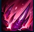

ACTIVE: Cho'Gath ruptures the target location after a 0.627 seconds-second delay,
granting Sight sight of the area before dealing magic damage to enemies within and Airborne
knocking them up for 1 second, and afterwards Slow slowing them by 60% for 1.5
seconds.
ACTIVE: Cho'Gath roars in a cone in the target direction, dealing magic damage to enemies
hit.

ACTIVE: Cho'Gath empowers his next 3 basic attacks within 6 seconds to gain Range
50 bonus range and launch a blast of spikes on-attack in the target's direction. Enemies struck
are dealt magic damage and Slow slowed by an amount that decays over 1.5 seconds. The damage
based on the target's health ratio is capped at 60 against Minion minions and Monster
monsters.
ACTIVE: Cho'Gath attempts to eat the target enemy, dealing them Hybrid penetration
true damage. Against non-champions, the base damage is modified.